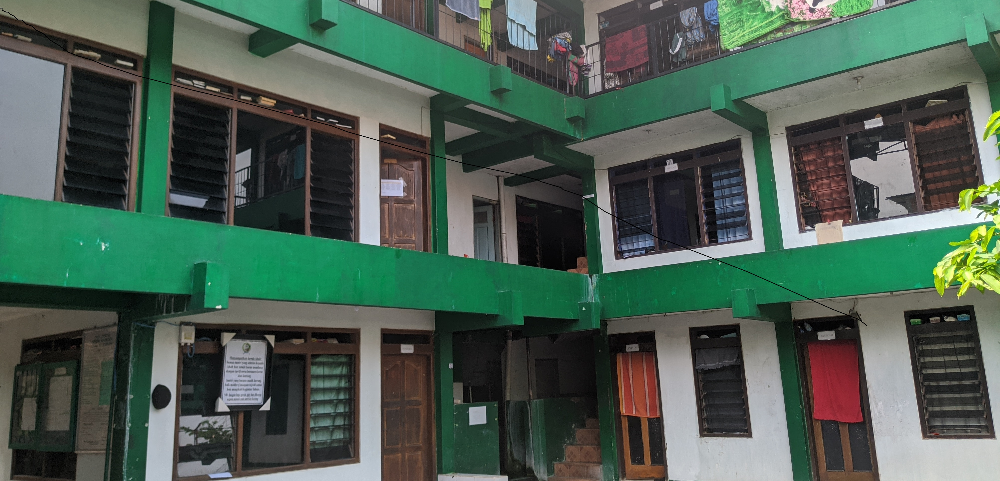
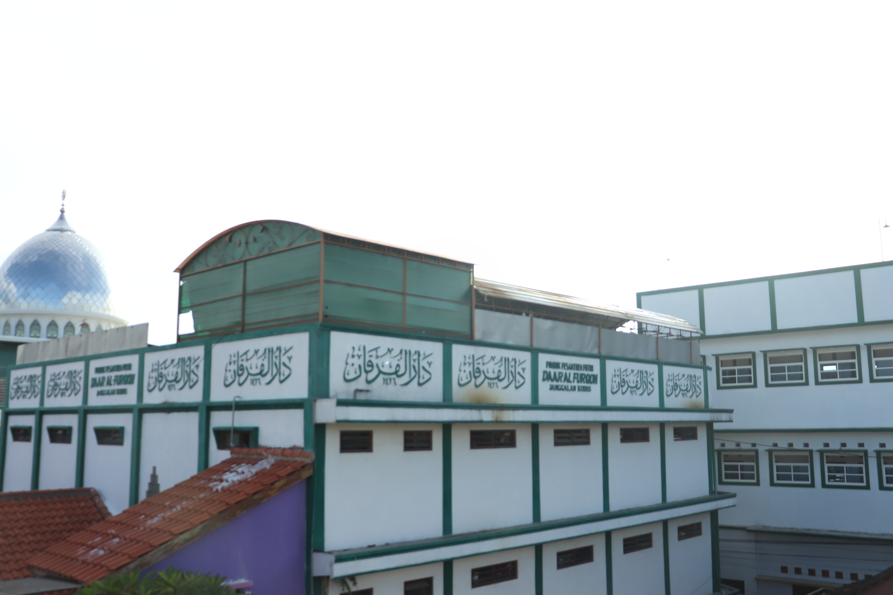
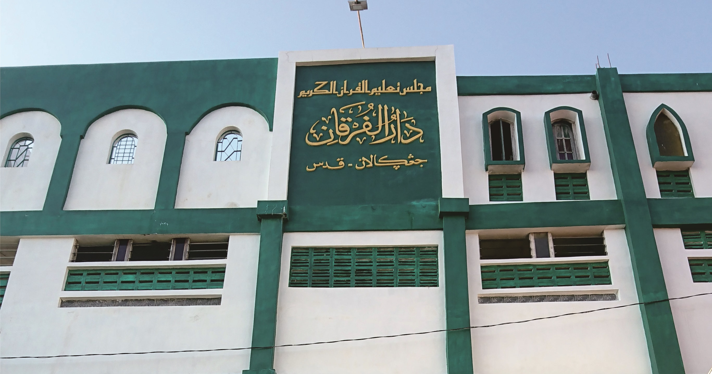
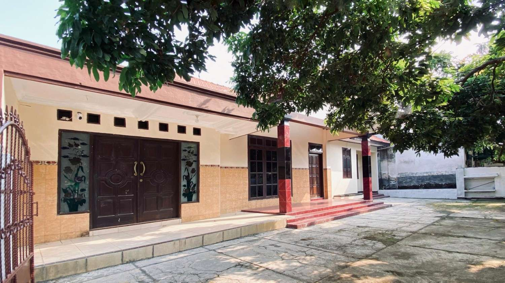

"Lancarkan Al-Qur'anmu seperti lancarnya alfatihahmu"
Membangun generasi Qur'ani yang berakhlak mulia, berilmu luas, dan siap menjadi pemimpin masa depan bangsa.
Perjalanan empat dekade membangun generasi Qur'ani dari rumah sederhana hingga empat kompleks.
Kompleks I merupakan cikal bakal berdirinya Pondok Pesantren Daar Al-Furqon yang berlokasi di Kalugawen, Desa Janggalan, Kota Kudus, sekitar ±400 meter di sebelah selatan Menara Kudus. Pondok pesantren ini didirikan pada tahun 1984 dan diasuh oleh K.H.S. Abdul Qodir Umar Basyir.

Didirikan atas dorongan wali santri untuk membuka pesantren khusus putri dengan sistem pendidikan yang sama.

Kompleks khusus bagi santri putra yang menempuh pendidikan formal dengan sistem pembinaan terintegrasi.

Kompleks khusus bagi santri putri yang menempuh pendidikan formal dengan suasana tertib dan religius.

Diteruskan dengan semangat yang sama
Pendiri (1984 — 2009)
KH. S. Abdul Qodir bin Umar Basyir
Pengasuh Saat Ini
KH. S. Ahmad Abdul Basith
Komitmen kami dalam membangun generasi Qur'ani yang berakhlak mulia
Menjadikan Pondok Pesantren Daar Al Furqon Kudus sebagai pusat pembinaan generasi Qur'ani yang berakhlak mulia, berilmu luas, dan siap menjadi pemimpin masa depan bangsa dengan fondasi keimanan yang kokoh.
Unduh brosur resmi Pondok Pesantren Daar Al Furqon Kudus
Geser untuk melihat lebih
Pondok Pesantren Daar Al Furqon Kudus didirikan pada tahun 1984 oleh K.H.S. Abdul Qodir bin Umar Basyir dengan komitmen untuk mencetak generasi yang hafal Al-Qur'an, menguasai ilmu syar'i, dan memiliki keterampilan modern.
Nama Daar Al-Furqon yang berarti "Rumah Al-Qur'an" dimaksudkan agar pesantren ini dapat menjadi tempat mencetak kader-kader Islam yang Qur'ani.
Sejak tahun 2009, kepemimpinan dilanjutkan oleh K.H.S. Ahmad Abdul Basith.
Program hafalan 30 juz dengan metode tikrar dan muraja'ah intensif yang terstruktur.
Pendidikan ilmu syar'i dan kitab kuning dengan kurikulum yang komprehensif.
Silakan hubungi kami untuk informasi lebih lanjut mengenai pendaftaran dan program
Dapatkan update terbaru seputar kegiatan pondok
Pilih kompleks pondok yang ingin Anda hubungi
Non-formal
Non-formal
Program sekolah
Program sekolah
Operasi berhasil
{kind=link}
{kind=link}
{kind=link}
{kind=link}